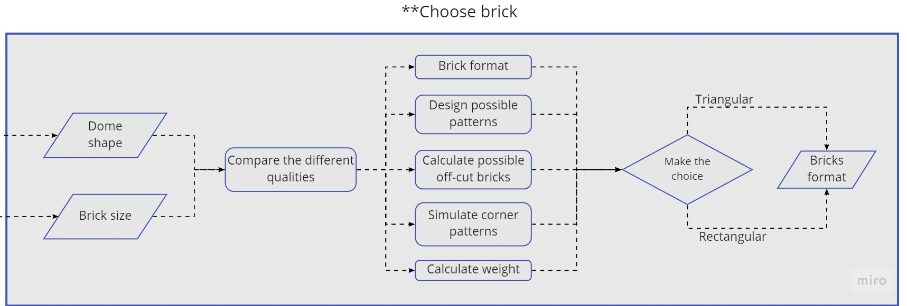

Domes:
How all the domes are developed and constructed
Sometimes pictures are too small for their quality, feel free to open them in a new tab

Fig. 1: The section in bricks.
This chapter will focus on how the domes are built. First the tesselation is discussed and how this should be translated into bricklaying. Lastly the construction of the domes will be explained.
Flowchart
In the 0_Introduction chapter the whole process of the design was shown. There were 5 groups that were dealt with individually. Last chapter resulted in the extruded walls, including openings. Until now, all bricklaying choices are made with triangular bricks. For the flowchart, the main dome will be handled individually with muqarnas. This chapter is about all the other domes.
Fig. 2: Flowchart of the openings
Then for all the elements bricklaying needs to be developed, both in detail as in construction methods. The choice is made with several considerations. These are shown in the following flowchart.

Fig. 3: Bricklaying considerations
Tesselation
In Rule N15 the ceiling are applied. In this step, no further rules are applied, other than:
Triangular tessellation of corridors and domes area without the wall thickness
Move the surfaces 2.4 meters up from the floors
Set outlines of the surfaces as anchor lines
Apply dynamic relaxation

Fig. 4: Domes in shape
To apply dynamic relaxation, tesselation has to be applied onto the mesh. The mesh is a dome with a hexagon as the base.
Fig. 5: GIF of applying different tesselations
Fig. 6: Top view of all the tesselations
Four different types of tesselation were made, and they are repeated several times. All the tesselations have different results when analysing them to stresses. From this, the "best" tesselation can be taken to calculate further in the structural report.
Fig. 7: Stresses in the different tesselations
As seen in figure 7, triangulating will create stresses in the edges, what is not beneficial. Also triangulating by snub+0 will result in a lot of stress. By quickly looking at it, performing quadsplit is very good for the dome. For the remainder of the design, the choice fell on "all constant quad split", as it performs best. The 3rd tesselation is assumed to be the the dome shape. Later on, this shape was translated to an simpler triangulated tesselation.
Fig. 8: Triangular tesselation
Bricklaying
For bricklaying there are a few options to consider. Firstly, are ribs needed? Secondly, what pattern will be used and lastly how does this work with the chosen tesselation.
When looking at traditional architecture with domes, usually ribs aren't needed, unless the diameter is a little higher. As the diameters in this project are small enough, assumed is that no ribs are needed.
The idea of using a fishbone pattern comes from a reference from the Jameh Mosque of Isfahan, where a dome is created with fishbone structure. It looks very nice and has some great possibilities when building with it.
Also, using this method allows for slightly sturdier domes as the bricks are a bit locked in place due to the pattern.

Fig. 9: Fishbone reference
When developing the script to make this, one big problem arose. Using the tesselation of figure 8, the normals of the points are changing quite heavily on the edges of faces. For this reason, another approach was needed
to be used. For bricklaying there are two options, first divide the tesselation into very tiny faces so that the normals make sense. Or create a new mesh that nearly gets to the desired shape. Another problem that came
was the constructability. There is no way residents of the camp can build very complicated shapes, like the tesselation that was proposed. It would be ideal if the dome was a spherical shape, so with simple tools this
could actually be built.
There are two possibilities to solve this. First change the dome shape, by using for instance pendentives. This is often used, but clashes with the triangular bricks and only made matters worse. Another option is to change the wall slowly into a circle, but laos this clashed with the triangular bricks. Eventually the decision fell that the dome should be split in two different shapes. This resulted in the domeshape seen in figure 7. It is nearly the same shape as the tesselation, but exists of two different shapes. First there is an compression belt that lofts between the hexagon and is made by normal "flat bricks" (headers and stretchers) , see figure 8. As it lofts into a circle, a "normal" spherical dome can be placed on top, using fishbone techniques.
Fig. 7: Stresses in the different tesselations

Fig. 8: Headers and strethers in compression belt
For the project a script was developed that developed this brick pattern.
The script for wall bricklaying
If clicking doesn't download, please save the link as a .gh file
Construction
This chapter will contain the steps taken to build the dome. After the walls and openings have been laid down it time to start the domes.
In figure 9 one sees the first part of the dome construction, the compression belt that makes the
transition from hexagon to circle. To construct this part of the dome on would need a Fathy compass,
(see fig 10), and six straight rod/bars with a length equal to the width of the wall.
Fig. 9: The compression belt as loft between hexagon and circle

Fig. 10: The use of the fathy
The first step is to raise the Fathy so that it touches on top of the wall. Than measures out the circle
that touches all the six corners of the room. In the six corners of the wall place the rod so that they
start in the center of the wall and angle they that they align with the circle of the Fathy compass.
Starting out from the corners and lay the brick until you have approximated the circle made by the
Fathy compass (see fig 10).
In fig.. The top part of the dome with the fishbone dome masonry pattern.
To lay the top part of the dome we start we one brick laid flat on its side flat and use that to angle
the next brick against, after a couple of bricks the friction and weight will make it that the first angled
brick cannot move as easily anymore. Using the Fathy compass makes sure that the top part of the
bricks are in the right angle. The tricky part comes after a full circle when one needs to get the first
brick out, the one that’s laid out flat. By this time the mortar between the brick should have dried
enough that the masonry doesn’t fall over like dominoes. Now one can start laying the second layer
in the other direction, for example if you oriented the first layer clockwise now you lay them counter
clockwise. Remember to check orientation of the brick every now and then with the Fathy compass.
Fig. 11: Headers and stretchers in the compression belt
Fig. 12: Final dome with fishbone bricks